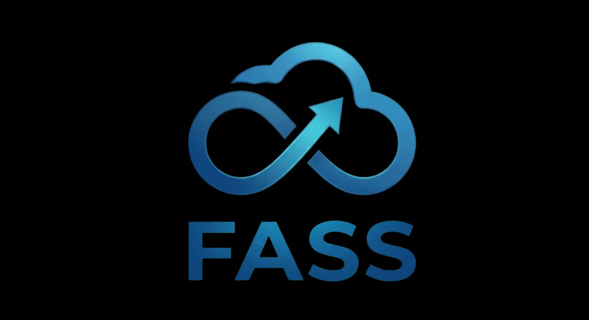

클라우드와 무한 궤도(Infinity), 상승 화살표가 결합된 형상으로 지속적 성장과 클라우드 확장성을 상징합니다.
(주)제때의 물류 비즈니스 연속성과 한계 없는 외부 확장성을 시각적으로 표현합니다.
신속한 개발 및 배포 환경을 구축하고, Next.js SSR 도입을 통해 고객이 체감하는 응답 속도를 극대화합니다.
비즈니스 변화에 유연하게 대응하는 컨테이너 기반의 블록 조립형(모듈러) 아키텍처를 지향합니다.
AI 기반의 지능형 운영, 수요 예측 및 AI 코딩 에이전트를 통해 플랫폼 스스로 진화하는 시스템을 구축합니다.
강력한 보안 체계(Stateless JWT) 및 무중단 데이터 동기화를 통해 비즈니스 리스크를 제로화합니다.
